Test 6A: first order, MUSCL and limiter controls on the corrected engine
27 October 2026 · Completed controlled diagnostic study
The corrected-engine repeats confirm that first order and MUSCL-off/RK2 recover the secondary slowdown and depth rise at G2 much better on the coarse mesh. The controlled ablations identify velocity reconstruction as the stronger sensitivity: retaining surface/depth reconstruction but removing velocity slopes gives G2 level/speed RMSE of 0.02337 m and 0.2565 m/s; retaining velocity reconstruction alone gives 0.05394 m and 0.8069 m/s. Shared velocity limiting passes the native accuracy checks and produces a brief slowdown around 20–22 s, but flow accelerates again by 23–24 s. Its speed RMSE is 0.7286 m/s and it does not sustain the observed depth rise. These results localize a numerical sensitivity; they do not prove that the extra first-order diffusion is physically correct.
What changed
The same immutable corrected engine used in the preceding reconstruction study now runs native first order and MUSCL-off/RK2 on both the coarse and broad 0.05 m constrained meshes. First order changes spatial reconstruction and time integration together; MUSCL-off keeps RK2. Geometry, Manning n=.01, Cs=0, Coriolis OFF, free-slip walls, initial depths and 0.1 s reporting stay fixed. Cs=0 supplies no turbulent stress and selects the assessed global momentum path. Every new hydraulic comparison lasts 30 s.
Experimental limiter controls use a separately archived source and binary. The inactive branch reproduces all ten saved time/depth/velocity frames of the original corrected first second bit for bit. Shared velocity limiting applies the smaller velocity-component limiter to both components. Shared-all limiting applies the smallest existing factor to surface, depth and both velocity components. Slope-removal ablations isolate scalar versus velocity reconstruction. The same final slopes feed interior and reflecting-wall faces. Archived source revisions and binary hashes define execution identity; generated checkout labels in analytical scores do not replace those identities.
Qualification and excluded controls
| Experiment | Native checks passed | Analytical checks passed | Test 6 diagnostic admitted |
|---|
| baseline | 12/12 | 16/16 | True |
| surface-only | 10/12 | 16/16 | True |
| velocity-only | 9/12 | 16/16 | True |
| common-velocity | 12/12 | 16/16 | True |
| common-all | 11/12 | 16/16 | False |
All five configurations pass all 16 analytical cases (80 passes). The baseline and shared-velocity candidate pass all 12 native checks. Coupling all four limiter factors fails the affine-field accuracy test and is excluded from Test 6. The surface/depth-only ablation passes 10/12 native checks and the velocity-only ablation 9/12: their recorded failures require the reconstructed slopes intentionally removed by the ablations. Both pass the remaining safety/consistency checks and all analytical cases, and are admitted solely as diagnostic controls. They are not qualified production second-order alternatives. All 24 baseline CPU regression tests pass. The short replay matches time, depth and both velocity components bit for bit.
Measured-subset results
Values below are segmented time-weighted RMSE on the unchanged historical recovered UCL marker subset. They are not comparisons against other models. G2 level coverage is approximately 7.025 s and speed coverage 17.916 s within the 30 s window. The stricter connected-marker subset has different coverage, so its absolute scores must not be compared with historical-subset scores as an improvement. Gaps longer than one second are excluded; isolated points remain plotted but have zero interval weight in RMSE.
| Configuration | G2 level (m) | G2 speed (m/s) | G4 level (m) | G4 speed (m/s) | G5 level (m) |
|---|
| Corrected order 2 / coarse | 0.0555211 | 0.838475 | 0.0201891 | 0.257508 | 0.0202204 |
| First order / coarse | 0.0134256 | 0.286534 | 0.0174776 | 0.215662 | 0.0176796 |
| MUSCL off, RK2 / coarse | 0.0134655 | 0.285993 | 0.0174618 | 0.215239 | 0.0176755 |
| Corrected order 2 / broad .05 m | 0.0555122 | 0.82563 | 0.0229427 | 0.223721 | 0.0199255 |
| First order / broad .05 m | 0.0349566 | 0.240147 | 0.0186257 | 0.269239 | 0.0159913 |
| MUSCL off, RK2 / broad .05 m | 0.0349621 | 0.23889 | 0.0186069 | 0.269166 | 0.0159946 |
| Surface only / coarse | 0.0233671 | 0.256505 | 0.016768 | 0.22601 | 0.01731 |
| Velocity only / coarse | 0.0539427 | 0.806901 | 0.0209703 | 0.313246 | 0.0195187 |
| Common velocity / coarse | 0.0575893 | 0.728589 | 0.0185443 | 0.283215 | 0.0160931 |
| Configuration | Strict G2 level RMSE (m) | Strict G2 speed RMSE (m/s) |
|---|
| Corrected order 2 / coarse | 0.0443976 | 0.913243 |
| First order / coarse | 0.015982 | 0.3119 |
| MUSCL off, RK2 / coarse | 0.0162318 | 0.311335 |
| Corrected order 2 / broad .05 m | 0.0453989 | 0.899303 |
| First order / broad .05 m | 0.0474513 | 0.258938 |
| MUSCL off, RK2 / broad .05 m | 0.0474617 | 0.257706 |
| Surface only / coarse | 0.0273233 | 0.280344 |
| Velocity only / coarse | 0.0447942 | 0.879079 |
| Common velocity / coarse | 0.0474356 | 0.794246 |
| G2 quantity | Historical covered duration (s) | Strict covered duration (s) |
|---|
| level_m | 7.024704618689579 | 2.5134264232008583 |
| speed_mps | 17.91621911922664 | 15.209452201933404 |
On the coarse mesh, first order and MUSCL-off/RK2 improve all five available measured quantity/gauge errors relative to the corrected order-2 control. Refinement remains mixed: MUSCL-off G2 level RMSE increases from 0.01347 to 0.03496 m while speed RMSE decreases from 0.2860 to 0.2389 m/s. The broad-mesh MUSCL-off G4 speed RMSE is 0.2692 m/s versus 0.2237 m/s for broad-mesh order 2. The shared-velocity candidate worsens G2 level RMSE from 0.05552 to 0.05759 m and G4 speed from 0.2575 to 0.2832 m/s, while improving G5 level. There is no demonstrated convergence to the recovered measurements or uniformly better second-order replacement.
Coarse methods
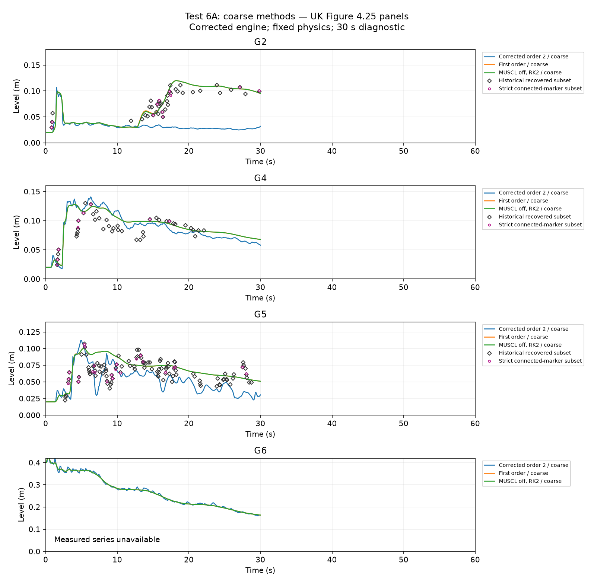
Original UK panel axes. Full 30-second range.Original UK panel axes. Full 30-second range.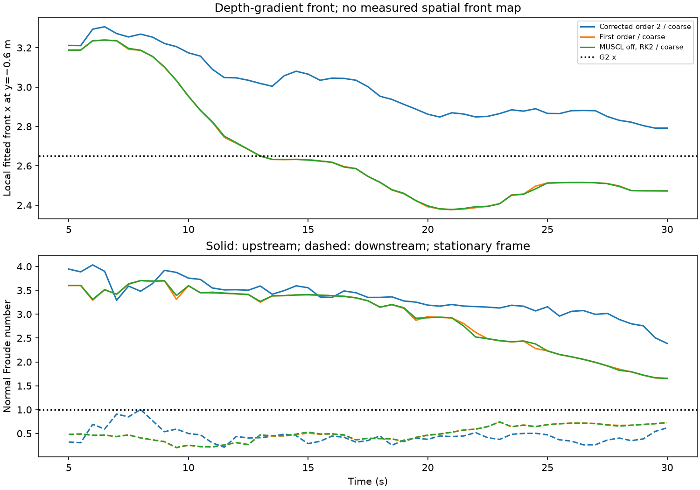
Broad methods
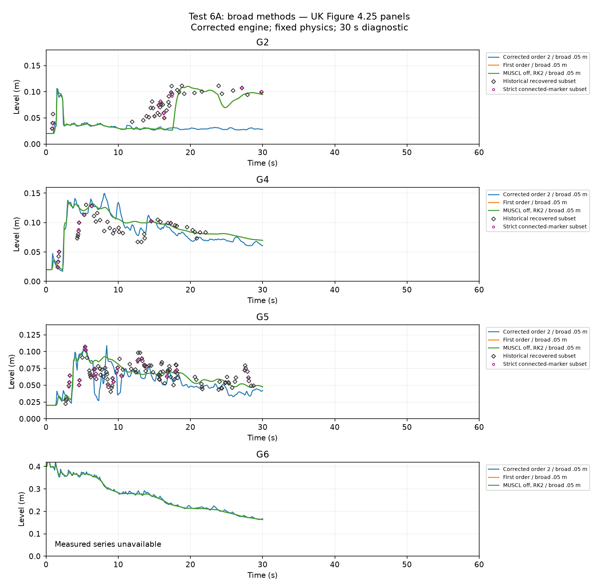
Original UK panel axes. Full 30-second range.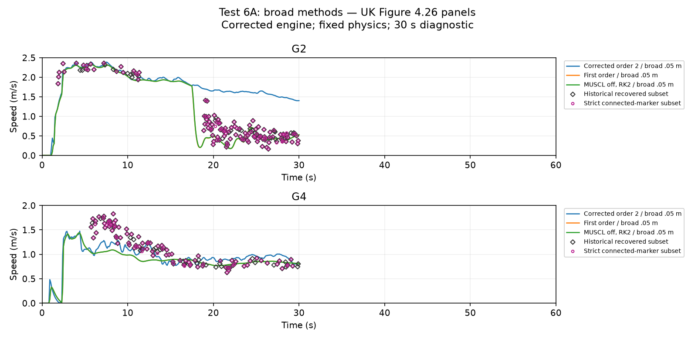
Original UK panel axes. Full 30-second range.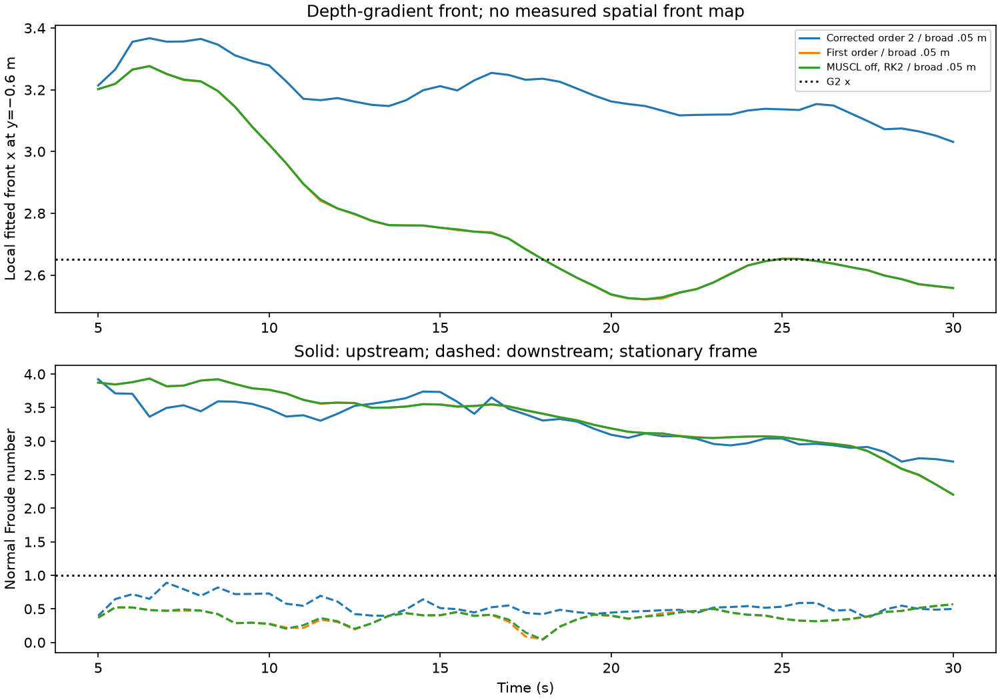
Limiter study
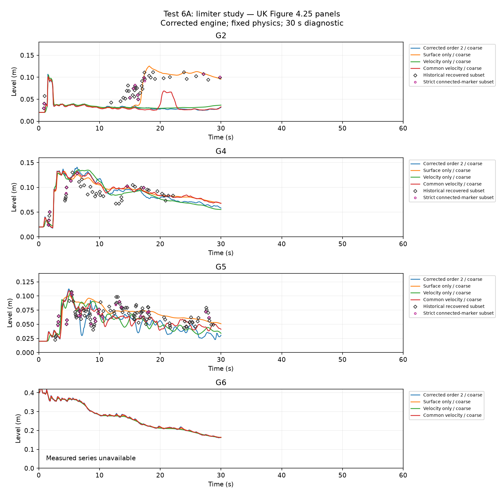
Original UK panel axes. Full 30-second range.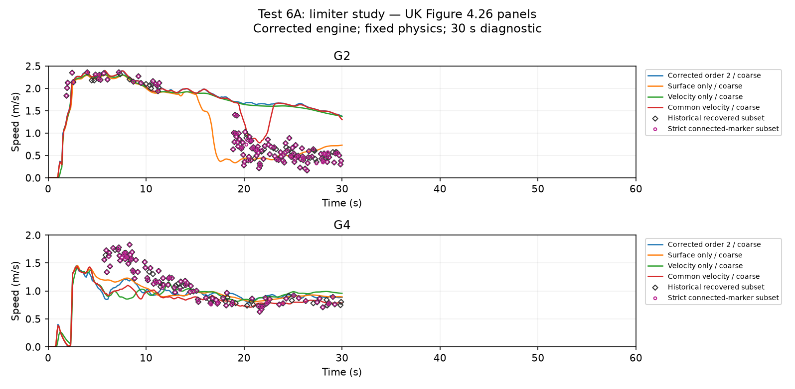
Original UK panel axes. Full 30-second range.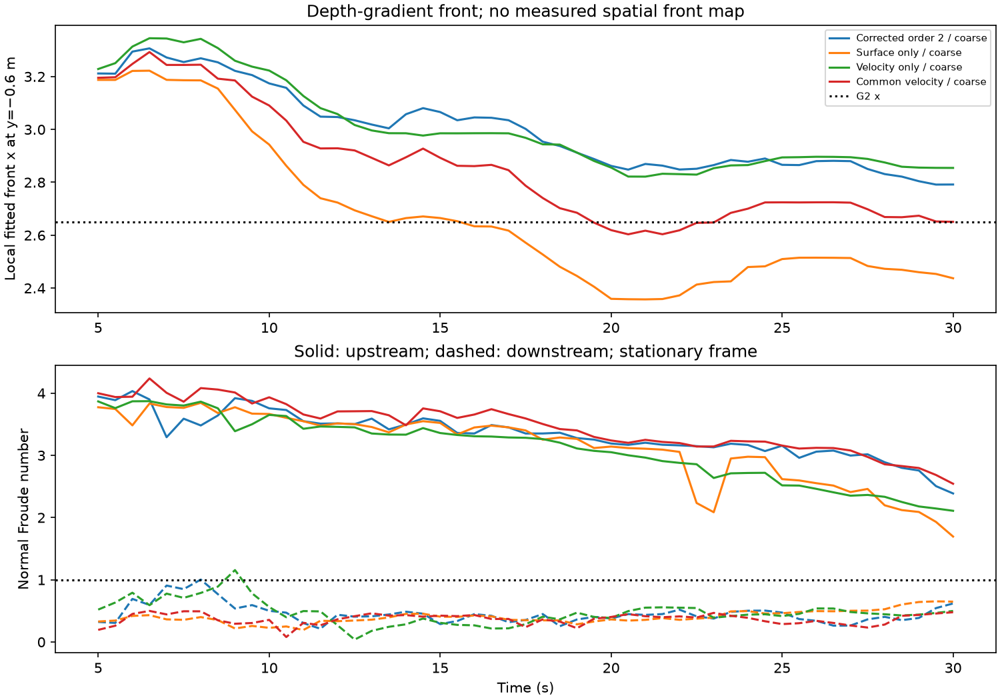
Front position and interpretation
At 20 s, the fitted coarse-mesh front is at x=2.862 m with corrected order 2, x=2.392 m with first order, and x=2.396 m with MUSCL-off/RK2; G2 is at x=2.650 m. Removing velocity slopes while retaining scalar reconstruction puts it at x=2.359 m, with G2 depth 0.11125 m and speed 0.4365 m/s. Removing scalar slopes while retaining velocity reconstruction leaves the front at x=2.856 m, with G2 depth 0.02926 m and speed 1.6412 m/s. Thus the recovered G2 response accompanies a substantial front displacement. The first-order broad mesh moves the fitted front to x=2.536 m, showing residual spatial sensitivity. These are computed front positions, not an independently measured spatial jump map. With shared velocity limiting, the fitted front moves from x=2.741 m at 18 s to x=2.617 m at 21 s and back to x=2.700 m at 24 s. G2 depth/speed changes from 0.0652 m / 0.8823 m/s at 21 s to 0.0260 m / 1.6584 m/s at 24 s. Its partial improvement is therefore transient; the fitted front is not a sharp boundary between uniform states.
| Configuration | G2 depth at 20 s (m) | G2 speed at 20 s (m/s) | Fitted front x at G2 y (m) |
|---|
| Corrected order 2 / coarse | 0.027570196812590767 | 1.6608396191555308 | 2.8622 |
| First order / coarse | 0.11350971195842144 | 0.4444745923885255 | 2.39207 |
| MUSCL off, RK2 / coarse | 0.11359049053318541 | 0.44367343957541244 | 2.39646 |
| Corrected order 2 / broad .05 m | 0.029493531870996202 | 1.652086451039616 | 3.16232 |
| First order / broad .05 m | 0.10842773535453237 | 0.4954437680185006 | 2.5361 |
| MUSCL off, RK2 / broad .05 m | 0.10862535522494221 | 0.501097085157092 | 2.53768 |
| Surface only / coarse | 0.11124739932963469 | 0.43651241108710115 | 2.35939 |
| Velocity only / coarse | 0.029262963882271096 | 1.6412085408493808 | 2.85573 |
| Common velocity / coarse | 0.039011712077863345 | 1.2432449892975117 | 2.61927 |
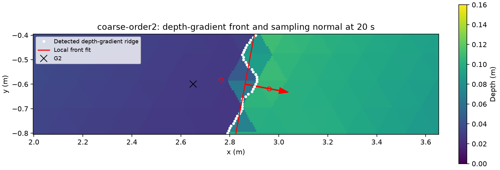
Corrected order 2 / coarse: computed depth, fitted front and G2 at 20 s.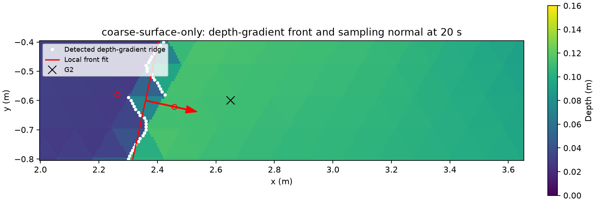
Surface only / coarse: computed depth, fitted front and G2 at 20 s.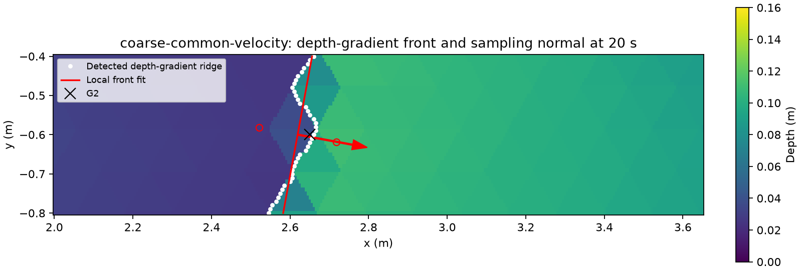
Common velocity / coarse: computed depth, fitted front and G2 at 20 s.Front detection uses the previously tested depth-gradient method: a 0.005 m sampling grid, Gaussian smoothing σ=.02 m, search x=2.2–3.5 m over y=−.8 to −.4 m, followed by a robust local line fit. Normal states are sampled 0.10 m either side. Curvature, motion and transverse flow limit one-dimensional jump interpretations; these samples are not an integrated momentum/energy ledger or measured jump-position map. Invalid fits are retained explicitly.
Decision
Continue development around velocity reconstruction and limiting, using independently specified oblique/reflected hydraulic jumps and rotation-equivalence tests to assess a multidimensional or characteristic limiter and any general shock sensor. Preserve admissible smooth linear fields, still-water balance, positivity, conservation and bank-release stability before returning to every available Test 6 gauge and a declared mesh sequence. Existing first order remains useful as a labelled sensitivity. A shared velocity limiter alone is insufficient, and the slope-removal ablations deliberately sacrifice formal accuracy. No experimental control is promoted to a production option or a new default.
The assessed snapshot retains the known full-SWE partially wet crest-isolation failure. This study does not qualify a new shoreline closure, change production defaults, fit physics coefficients, replace measured references or promote canonical regression anchors. Complete measured time series and independent digitization review remain unavailable. Runtime values share a busy host and are not performance comparisons.
Evidence and reproduction
All cases and scores · Pre-execution experimental design · Qualification-based admissions · Full-field replay · Isolated diagnostic patch · Front states at 20 s
Corrected order 2 / coarse: executed input, all gauge histories, execution identity, front history.
First order / coarse: executed input, all gauge histories, execution identity, front history.
MUSCL off, RK2 / coarse: executed input, all gauge histories, execution identity, front history.
Corrected order 2 / broad .05 m: executed input, all gauge histories, execution identity, front history.
First order / broad .05 m: executed input, all gauge histories, execution identity, front history.
MUSCL off, RK2 / broad .05 m: executed input, all gauge histories, execution identity, front history.
Surface only / coarse: executed input, all gauge histories, execution identity, front history.
Velocity only / coarse: executed input, all gauge histories, execution identity, front history.
Common velocity / coarse: executed input, all gauge histories, execution identity, front history.